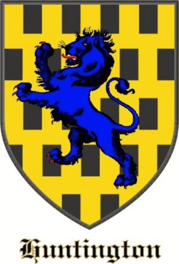

Blev högst 61 år.
1152 Caitness, Scotland. [1]
1213 Forfar, Angusshire, Scotland. [1]
Det finns många tvivel om identiteten på denna kvinna eller kvinnor, fruar till William de Lindsay och Gille Crist Earl of Angus. Hennes namn är identiskt med en dotter till Henry och Ada, men den dottern är väldokumenterad i sina äktenskap och kunde inte vara den här personen. Mycket forskning behövs för att avgöra vem den här kvinnan är